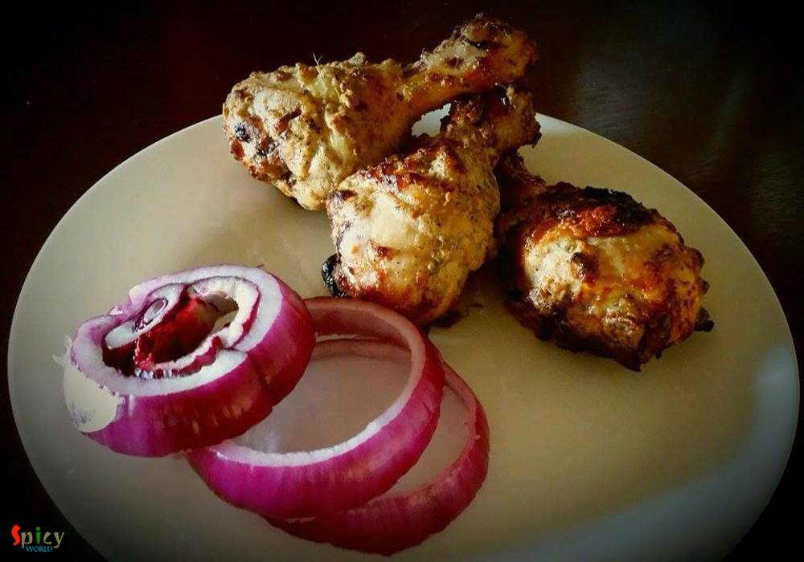
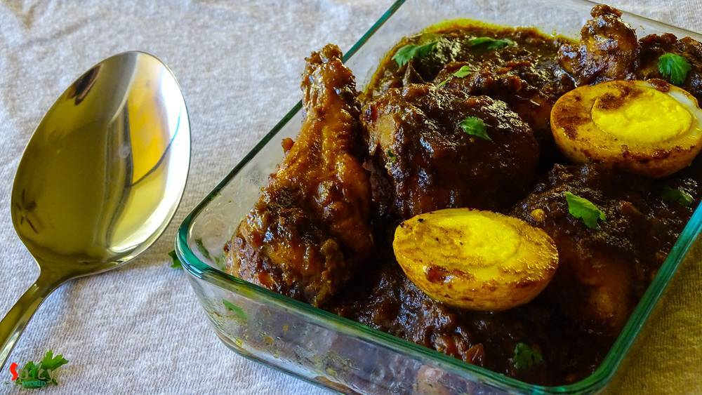

Simple and Easy Recipes

Nonveg Recipe
Oct 7, 2015
In India we all love "dhaba" foods and also we love eggs. Mostly their dishes are spicy. So, today I am sharing this spicy dish with you. Please try this at your home.


Nonveg Recipe
Oct 5, 2015
I made this dish yesterday and it was a blast. So, I am sharing this recipe with you. Please give it a try and let me know about your experience.

Veg Recipe
Oct 4, 2015
This dish dont need any explanation. Because its 'Biriyani'. This is the most popular dish in India. The vegetarian version of biriyani is also very tasty Just give a try and impress your family.

Nonveg Recipe
Oct 3, 2015
Wanna try something new ? Just follow this recipe and get perfect starter for your friday evening. These baked leg pieces will never fail to satisfy your apetite. Try this and surprise your family and guest.

Veg Recipe
Oct 2, 2015
First time I ate this pulao from one of my favourite aunt. She can turn this simple pulao into something special with her love and care. She really has some magic in her hand and I simply love it. In many gatherings you can make this dish and impress your guest.

Veg Recipe
Oct 1, 2015
When you are in a mood of healthy eating, just give it a try ... You will find peace during eating this khichdi because it has some mild flavours and healthy ingredients. This is a meal which you can not ignore.

Veg Recipe
Sep 30, 2015
Though me and my hubby both are nonveg lovers, but we also love spicy veg dishes. 'Kadai Paneer' is our favourite one. Last night my dinner was this paneer dish along with butter naan. There were no other words but 'delicious and mouth watering' about the combination. The main attraction here is KADAI masala. It gives such a nice flavour in this dish. Just close your eyes and go for it.
Sep 26, 2015
According to me comfort food means hot plain rice, lentil soup (daal), one lemon slice, mashed potato with fried onion, one green chili and lots of 'red lentil fritters'. I know every person has their own comfort food. But isn't it become more comforter when your mom serve this plate with her love and care. It definitely is. I learned this recipe from her. Just give it a try.

Veg Recipe
Sep 25, 2015
I love to eat chilled watermelon cubes during summer. My divaai(grandma) serve watermelon cubes with some crushed ice on top and then magically the taste level increases twice. She has her own unique style. So, today I made an attempt on watermelon smoothie and it came out quite delicious. Hope you will like it.

Nonveg Recipe
Sep 24, 2015
Yesterday morning during surfing net I saw an eyecatching picture of Chicken Dak Bunglow curry. It made me doing immediate preparation for dinner.Trust me, after dinner there was literally nothing in our plate except bones:-) It became so damn tasty ! I once ate the mutton version of this curry. That was also finger licking delicious, will upload that soon. Do give this recipe a try and I am sure ...